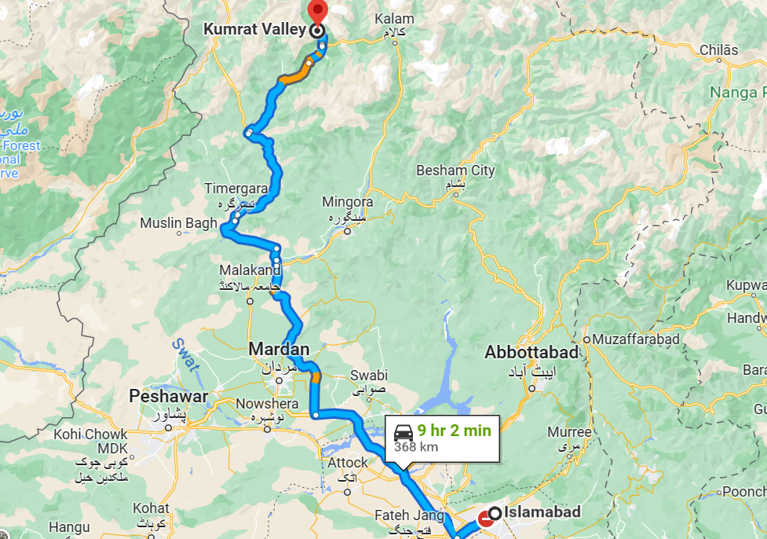
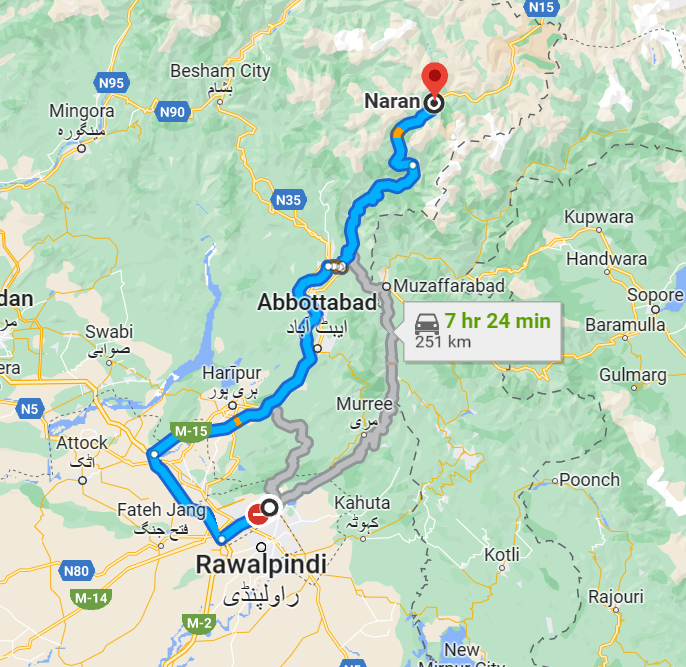

Kumrat Valley:
Places to Explore
Kumrat town center
Jaaz Banda (jahaz banda) Kumrat
Kumrat's Katora Lake
Kumrat's Panjkoa Lake
Kumrat National Park
Kumrat Valley Jungle
Kumrat Water Fall
Kumrat Camp Site (camping pods)
Things to do:
Hiking
Camping
Fishing
Horse Riding
Photography
Swat Valley
Places to Visit
Kalam Valley
Madyan
Bahrain
Saidu Sharif
Mahodand Lake
Malam Jabba
Fizaghat
Kundol Lake
Shingral,Waterfall
Marghuzar
Things to do:
Hiking
Camping
Fishing
Horse Riding
Photography
Boating

Naran VAlley
Places to Visit
Saif ul Malok Lake
Ansoo Lake (Tear Lake)
Malika Parbat Mountain View
Lalazar and Batakundi
Noori Top & Noori Lake
Lulusar Lake
Dudipatsar Lake
Shogran Valley
Kiwai
Things to do:
Hiking
Camping
Fishing
Horse Riding
Photography
Rafting
Babusar Yop
Places to Visit
It a mountain and with magical view of valleys can be enjoyed and clouds
Things to do:
Hiking
Camping
Zin lane
Horse Riding
Photography